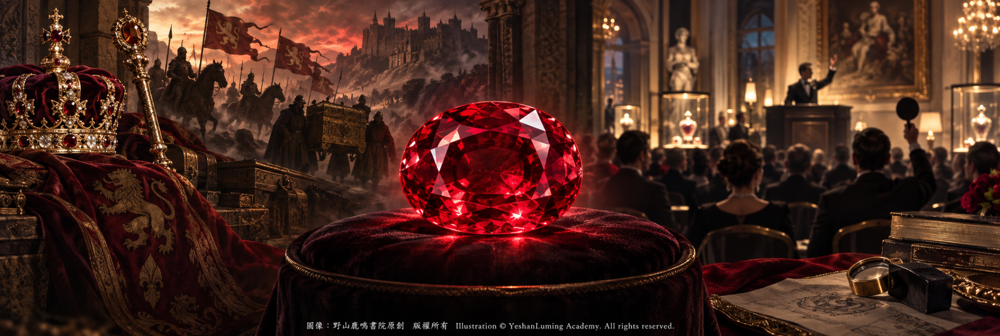
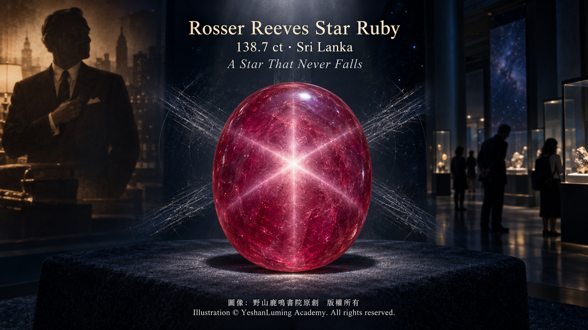

羅瑟·里夫斯星光紅寶石 · 夜空中永不隕落的六射星芒The Rosser Reeves Star Ruby · A Six-Rayed Star That Never Falls from the Night Sky
The World of Gemstones · Ruby SeriesThe Rosser Reeves Star Ruby · A Six-Rayed Star That Never Falls from the Night Sky
The World of Gemstones · Ruby Series羅瑟·里夫斯星光紅寶石 · 夜空中永不隕落的六射星芒
寶石世界·紅寶石篇
寶石世界·紅寶石篇（110）The World of Gemstones · Ruby Series (110)
在前面的章節中，我們共同見證了日出紅寶石與FURA之星如何憑藉精細的刻面切工，讓光線在寶石內部不斷折射與反射，最終釋放出令人難以忘懷的火彩與光芒。
然而，在天然紅寶石的宏大世界裡，大自然還留下了另一種令人屏息的光學奇蹟。
它不需要繁複的刻面，而是以溫潤飽滿的弧面形態，在點狀光源照射下，綻放出宛如夜空恆星般耀眼的六射星芒。當光源或者寶石輕輕移動時，那顆明亮的星也會在寶石表面緩緩游移，彷彿一個具有生命的天體，被封存在紅色晶體之中。
這就是神秘而迷人的星光紅寶石。
在世界著名的星光紅寶石中，有一顆寶石以138.7克拉的巨大重量、迷人的紅紫色，以及清晰而居中的六射星芒聞名於世。它就是收藏於美國史密森尼國家自然歷史博物館的羅瑟·里夫斯星光紅寶石（Rosser Reeves Star Ruby）。
它並不是世界上唯一巨大的星光紅寶石，也不應被簡單宣稱為世界最大或者最完美的一顆。但是，當重量、顏色、星芒清晰度、歷史知名度與國家級博物館收藏等條件結合在一起時，它無疑是世界上最大、最著名和最優秀的星光紅寶石之一。
今天，這顆寶石靜靜地展示在美國華盛頓特區的史密森尼國家自然歷史博物館。隔著展櫃，人們可以看到三條明亮光帶在紅紫色弧面上交叉，形成一顆端正而醒目的六射星辰。
與日出紅寶石和FURA之星不同，羅瑟·里夫斯星光紅寶石的魅力，不在於刻面所產生的璀璨火彩，而在於光線、晶體結構、定向包裹體與弧面切工共同創造出的星光效應。
這顆紅寶石的地質故鄉，是素有「寶石島」之稱的斯里蘭卡。
斯里蘭卡擁有歷史悠久的沖積寶石礦床。經過漫長的風化、侵蝕與河流搬運，剛玉、尖晶石、金綠寶石、鋯石等密度較高的寶石礦物，逐漸集中在河床和古代沖積層中。數百年來，當地礦工依靠世代相傳的經驗，在富含寶石的砂礫層中尋找大自然留下的珍寶。
但是，關於羅瑟·里夫斯星光紅寶石最初在斯里蘭卡何時被發現、由誰開採，以及它以何種方式離開產地，目前並沒有完整而可靠的公開記錄。對一顆如此重要的著名寶石，我們寧可承認早期歷史仍然存在空白，也不能用無法核實的故事，代替真正的歷史。目前可以根據史密森尼及GIA資料追溯的歷史，是這顆紅寶石曾經出現在英國的一場拍賣中。美國珠寶商Paul Fisher的父親從拍賣會上將它買下，當時寶石重量約為140克拉。
在前面的章節中，我們共同見證了日出紅寶石與FURA之星如何憑藉精細的刻面切工，讓光線在寶石內部不斷折射與反射，最終釋放出令人難以忘懷的火彩與光芒。
然而，在天然紅寶石的宏大世界裡，大自然還留下了另一種令人屏息的光學奇蹟。
它不需要繁複的刻面，而是以溫潤飽滿的弧面形態，在點狀光源照射下，綻放出宛如夜空恆星般耀眼的六射星芒。當光源或者寶石輕輕移動時，那顆明亮的星也會在寶石表面緩緩游移，彷彿一個具有生命的天體，被封存在紅色晶體之中。
這就是神秘而迷人的星光紅寶石。
在世界著名的星光紅寶石中，有一顆寶石以138.7克拉的巨大重量、迷人的紅紫色，以及清晰而居中的六射星芒聞名於世。它就是收藏於美國史密森尼國家自然歷史博物館的羅瑟·里夫斯星光紅寶石（Rosser Reeves Star Ruby）。
它並不是世界上唯一巨大的星光紅寶石，也不應被簡單宣稱為世界最大或者最完美的一顆。但是，當重量、顏色、星芒清晰度、歷史知名度與國家級博物館收藏等條件結合在一起時，它無疑是世界上最大、最著名和最優秀的星光紅寶石之一。
今天，這顆寶石靜靜地展示在美國華盛頓特區的史密森尼國家自然歷史博物館。隔著展櫃，人們可以看到三條明亮光帶在紅紫色弧面上交叉，形成一顆端正而醒目的六射星辰。
與日出紅寶石和FURA之星不同，羅瑟·里夫斯星光紅寶石的魅力，不在於刻面所產生的璀璨火彩，而在於光線、晶體結構、定向包裹體與弧面切工共同創造出的星光效應。
這顆紅寶石的地質故鄉，是素有「寶石島」之稱的斯里蘭卡。
斯里蘭卡擁有歷史悠久的沖積寶石礦床。經過漫長的風化、侵蝕與河流搬運，剛玉、尖晶石、金綠寶石、鋯石等密度較高的寶石礦物，逐漸集中在河床和古代沖積層中。數百年來，當地礦工依靠世代相傳的經驗，在富含寶石的砂礫層中尋找大自然留下的珍寶。
但是，關於羅瑟·里夫斯星光紅寶石最初在斯里蘭卡何時被發現、由誰開採，以及它以何種方式離開產地，目前並沒有完整而可靠的公開記錄。對一顆如此重要的著名寶石，我們寧可承認早期歷史仍然存在空白，也不能用無法核實的故事，代替真正的歷史。目前可以根據史密森尼及GIA資料追溯的歷史，是這顆紅寶石曾經出現在英國的一場拍賣中。美國珠寶商Paul Fisher的父親從拍賣會上將它買下，當時寶石重量約為140克拉。
當時這顆寶石雖然體量巨大、有六射星芒，表面卻存在較深的刮痕。後來，它經過輕微的重新切磨與拋光，去除了部分受損表面，恢復了更加完整而光潔的弧面。
重新切磨後，它的重量減少至138.7克拉，成為今天我們看到的橢圓形弧面星光紅寶石。這段經歷揭示了星光寶石切磨中一個非常重要的原則：切磨的目的並不只是保留最多重量，而是要在重量、弧面比例、顏色、透明度和星芒位置之間尋找最佳平衡。
如果弧面中心沒有按照剛玉晶體的 c 軸正確定向，星芒就可能偏離中心，甚至無法完整呈現；如果底部保留過厚，寶石可能顯得過暗；如果切磨過薄，又可能犧牲顏色與體量。
因此，從約140克拉到138.7克拉，表面上看只是減少了少量重量，實際上既去除了明顯刮痕，也保留了這顆名石絕大部分重量與原有的六射星芒。
上世紀五十年代，這顆巨型星光紅寶石進入了美國珠寶市場。
紐約珠寶商Robert C. Nelson Jr.代表Paul Fisher出售這顆寶石，美國著名廣告人羅瑟·里夫斯（Rosser Reeves）後來成為了它的新主人。公開資料並沒有記錄當時的確切成交價格，因此我們無法知道里夫斯究竟為它支付了多少金錢。
羅瑟·里夫斯是二十世紀美國廣告業最具影響力的人物之一，也是Ted Bates廣告公司的共同創辦人。他以提出「獨特銷售主張」（Unique Selling Proposition，簡稱USP）而聞名，對現代商業廣告的發展產生了深遠影響。
但是，這位每天與市場、品牌、競爭和商業策略打交道的廣告大師，卻對一顆來自斯里蘭卡古老砂礦的星光紅寶石產生了深厚感情。史密森尼的官方資料記載，里夫斯把這顆紅寶石當作自己的幸運石，經常隨身攜帶，並且親暱地稱它為自己的「寶貝」。

Click to enlarge
我們已經無法知道，這顆寶石究竟陪伴他參加過多少會議、完成過多少廣告策劃，又見證過多少重要的商業決定。但是，可以確定的是，它在里夫斯心中早已不再只是一件昂貴的收藏品，而是具有特殊情感意義的私人陪伴。
寶石的物質價值來自稀有性，文化價值卻往往來自人與寶石之間建立的感情。一顆石頭被人喜愛、命名、珍藏，又在漫長歲月中參與主人的人生，它便開始擁有超越礦物本身的故事。
一九六五年，羅瑟·里夫斯夫婦作出了一個重要決定：把這顆陪伴多年的幸運石捐贈給史密森尼學會，讓它進入美國國家寶石收藏，並向全世界公眾展示。從此，這顆寶石有了今天廣為人知的名字——羅瑟·里夫斯星光紅寶石。它不再只是廣告大師口袋裡的私人幸運石，而成為任何人都可以前往博物館欣賞的人類共同文化與自然遺產。
當我們站在博物館展櫃前，以寶石學的角度觀察這顆紅寶石時，最先吸引目光的，自然是它表面那顆清晰的六射星辰。
這種特殊光學現象，在寶石學中稱為星光效應（Asterism）。
天然紅寶石屬於剛玉族礦物。某些剛玉晶體在形成過程中，會包含大量極其細密的針狀包裹體。在經典的天然星光紅寶石中，形成星芒的定向針狀包裹體通常是金紅石（Rutile）。
這些細密的金紅石針，通常沿剛玉晶體基面內的三組晶體學方向排列，彼此約成60度角。肉眼觀察時，它們可能使寶石呈現柔和的絲絹狀外觀；但是當它們的大小、密度和排列方式恰到好處，又遇上方向正確的弧面切工時，就會產生令人驚嘆的星光效應。
當點狀光源照射弧面寶石時，每一組近似平行的針狀包裹體都會集中反射光線，形成一條明亮光帶。三組不同方向的針狀包裹體形成三條彼此交叉的光帶，最終構成我們肉眼看到的六射星芒。因此，一顆六射星光紅寶石表面看似有六條獨立光線，實際上是三條光帶在同一中心相交的結果。
形成優秀星光效應，需要多項條件同時配合。
首先，寶石內部必須具有足夠數量、方向規整的微細包裹體；如果包裹體太少，星線可能非常微弱；如果包裹體過於粗大或者過分密集，寶石又可能失去透明感，顯得灰暗而混濁。
其次，切磨師必須準確判斷剛玉晶體的方向，使弧面頂部與晶體 c 軸保持適當關係。如果定向不準確，星芒便可能偏向一側，甚至有部分星線消失。
第三，弧面的高度和曲率必須適當。優秀的星光紅寶石，星芒中心通常接近弧面頂部，六條星線分布均衡，並能向寶石邊緣延伸。當光源移動時，星芒也應當連續、平順地在表面移動，而不是破碎、遲鈍或者忽明忽暗。
需要注意的是，雖然金紅石針是天然星光紅寶石最經典的成因，但並不是所有星光紅寶石都必然只由金紅石形成。個別樣品的星光效應也可能與其他定向包裹體或微細結構有關，仍需通過顯微觀察與儀器分析確認。
同樣需要注意的是，星光效應並不等於紅寶石天然身份的絕對證明。實驗室合成紅寶石也可以形成星光，人造方法還可以在寶石內部製造排列非常規整的針狀結構。因此，判斷一顆星光紅寶石是天然還是人工合成，不能只看它是否有星，而要綜合研究包裹體、生長結構、光譜特徵和其他寶石學證據。
在某些天然星光紅寶石中，加熱還可能改變或溶解部分金紅石針，使原有的絲絹與星芒減弱。因此，一顆能夠保留清晰星光的天然紅寶石，往往具有十分重要的寶石學與收藏意義。
不過，現有公開的史密森尼館藏資料，並沒有逐項列出現代實驗室對羅瑟·里夫斯星光紅寶石加熱狀態所作的完整結論。因此，我們可以確定它被收藏機構登記為天然星光紅寶石，卻不能在缺少公開鑑定報告的情況下，擅自把它寫成「完全天然無燒」。
羅瑟·里夫斯星光紅寶石採用橢圓形弧面切工，重138.7克拉。史密森尼資料將它的顏色記錄為中等深淺的紅紫色（Medium Red Purple）。它的顏色未必像頂級刻面緬甸紅寶石那樣濃烈鮮紅，但在如此巨大的重量下，仍能保持迷人的紅紫色調、柔和的半透明感，以及清晰而居中的六射星芒，正是它極為難得的地方。
有些星光紅寶石雖然顏色漂亮，星芒卻模糊、彎曲或者偏離中心；另一些寶石雖然星線清楚，底色卻灰暗混濁。還有一些巨大星光寶石，為了保留重量而留下過厚的底部，使整體比例顯得笨重。
羅瑟·里夫斯星光紅寶石的珍貴，正在於巨大重量、迷人顏色、弧面比例與清晰星芒之間，形成了罕見而協調的平衡。
作為剛玉族的一員，紅寶石的一般礦物學性質包括：莫氏硬度為9，相對密度約為4.00，折射率通常約在1.762至1.770之間，雙折射率約為0.008。這些數據是天然紅寶石所屬礦物種類的一般物理與光學性質，並不代表史密森尼已經在公開資料中逐項列出了羅瑟·里夫斯星光紅寶石的所有個體檢測數據。
真正讓這顆寶石名垂歷史的，不只是它的重量，也不是某一項孤立的物理數值，而是斯里蘭卡的地質起源、巨大的天然晶體、清晰的六射星芒、重新切磨帶來的改善、羅瑟·里夫斯與它之間的特殊感情，以及最終進入國家博物館的收藏歷史。
從斯里蘭卡古老的沖積礦床，到英國拍賣會；從美國珠寶商手中，到廣告大師的私人收藏；最後再從一顆隨身攜帶的幸運石，成為史密森尼展櫃中的國家級珍寶——這顆紅寶石走過的道路，本身就是一段跨越地質、商業與人類情感的歷史。
它用三條交叉的光帶，創造出六射星芒；又用一段至今未能完全還原的早期身世，為自己留下了幾分可能永遠無法解開的神秘。
為了方便讀者將來研究星光紅寶石、查閱博物館館藏資料，或者評估具有特殊光學效應的彩色寶石，下面把羅瑟·里夫斯星光紅寶石的核心資料綜合整理如下。
一、寶石基本資料
- 名稱：羅瑟·里夫斯星光紅寶石（Rosser Reeves Star Ruby）。
- 重量：138.7克拉；重新切磨以前約為140克拉。
- 寶石種類：天然星光紅寶石。
- 產地：斯里蘭卡。
- 顏色：中等深淺的紅紫色（Medium Red Purple）。
- 形狀與切工：橢圓形弧面切工（Oval Cabochon）。
- 主要光學特徵：清晰、居中而分布均衡的六射星芒。
- 加熱情況：現有公開館藏資料未逐項列出現代實驗室對其加熱狀態作出的完整結論，不宜自行宣稱為無燒。
二、星光效應資料
- 光學現象：星光效應（Asterism）。
- 常見成因：寶石內部存在沿三組晶體學方向排列的細密針狀金紅石包裹體。
- 星芒結構：三條反射光帶彼此交叉，形成六射星芒。
- 最佳觀察條件：陽光、手電筒或珠寶燈等單一點狀光源。
- 切磨要求：弧面切工必須按照剛玉晶體方向正確定位，才能使星芒清晰並接近中心。
- 鑑定提醒：具有星光效應不等於一定天然；天然、合成及處理情況仍需由專業寶石實驗室鑑定。
三、已知流轉歷史
- 早期歷史：最初發現時間、礦工身份及離開斯里蘭卡的過程，目前缺乏完整可靠記錄。
- 英國拍賣：Paul Fisher的父親曾在英國拍賣會上購得這顆當時約重140克拉的紅寶石。
- 重新切磨：為去除較深刮痕，寶石經過輕微重磨，重量減至138.7克拉。
- 進入美國：紐約珠寶商Robert C. Nelson Jr.代表Paul Fisher將其出售。
- 收藏者：美國廣告人羅瑟·里夫斯。
- 私人稱呼：里夫斯把它視為幸運石，並稱它為自己的「寶貝」。
- 捐贈時間：一九六五年。
- 捐贈者：羅瑟·里夫斯夫婦。
- 收藏機構：美國史密森尼國家自然歷史博物館。
- 館藏編號：G4257。
最後有必要指出，星光紅寶石的價值不能只看星線是否明亮，也不能只看重量是否巨大。真正優秀的星光紅寶石，需要同時考慮顏色、透明度、星芒清晰度、星芒是否居中、六條星線是否完整、弧面比例、天然或合成身份，以及是否經過處理。
羅瑟·里夫斯星光紅寶石之所以令人難忘，正是因為它在138.7克拉的巨大體量之上，仍然托起了一顆清晰、端正而充滿生命力的六射星辰。那顆星曾經被一位廣告大師珍藏在身邊，成為他的私人幸運符；今天，它又在史密森尼的展櫃中，向來自世界各地的參觀者安靜閃耀。
人的生命終有盡頭，商業帝國也會隨時代消逝；但是，被大自然寫入晶體深處的星光，仍然沿著三組細密的金紅石針，在紅寶石內匯聚，交叉，放射，永不隕落。
（未完待續）
In the preceding chapters, we witnessed how the Sunrise Ruby and the Estrela de FURA, through their finely executed faceted cuts, allow light to refract and reflect repeatedly within the stones before releasing unforgettable fire and brilliance.
Yet within the vast world of natural rubies, nature has left us another breathtaking optical miracle.
It requires no elaborate faceting. Instead, beneath a point-source light, its smooth, full cabochon surface reveals a brilliant six-rayed star resembling a celestial body in the night sky. When either the light source or the gemstone moves gently, the luminous star glides slowly across the ruby’s surface, like a living heavenly body imprisoned within a red crystal.
This is the mysterious and enchanting star ruby.
Among the world’s celebrated star rubies, one gemstone is renowned for its immense weight of 138.7 carats, captivating red-purple color, and sharp, well-centered six-rayed star. It is the Rosser Reeves Star Ruby, now housed in the Smithsonian’s National Museum of Natural History in the United States.
It is not the world’s only enormous star ruby, nor should it simply be proclaimed the largest or most perfect of them all. Yet when its weight, color, star definition, historical renown, and presence in a national museum collection are considered together, it is undoubtedly one of the largest, most famous, and finest star rubies in the world.
Today, the gemstone rests quietly on display at the Smithsonian’s National Museum of Natural History in Washington, D.C. Through the glass case, visitors can see three luminous bands crossing its red-purple cabochon surface to form a distinct and striking six-rayed star.
Unlike the Sunrise Ruby and the Estrela de FURA, the fascination of the Rosser Reeves Star Ruby does not lie in the dazzling brilliance created by facets, but in the asterism produced through the interaction of light, crystal structure, oriented inclusions, and cabochon cutting.
The geological homeland of this ruby is Sri Lanka, long celebrated as the “Island of Gems.”
Sri Lanka possesses ancient alluvial gem deposits. Through prolonged weathering, erosion, and river transport, dense gem minerals—including corundum, spinel, chrysoberyl, and zircon—gradually accumulated in riverbeds and ancient alluvial layers. For centuries, local miners have relied on knowledge passed down through generations to search gem-rich gravel beds for the treasures left behind by nature.
However, no complete and reliable public record tells us when the Rosser Reeves Star Ruby was first discovered in Sri Lanka, who mined it, or how it left the country. For so important a celebrated gemstone, it is better to acknowledge that gaps remain in its early history than to replace the truth with stories that cannot be verified. What can be traced through Smithsonian and GIA records is that the ruby once appeared at an auction in England. The father of American jeweler Paul Fisher purchased it there, when the gemstone weighed approximately 140 carats.
In the preceding chapters, we witnessed how the Sunrise Ruby and the Estrela de FURA, through their finely executed faceted cuts, allow light to refract and reflect repeatedly within the stones before releasing unforgettable fire and brilliance.
Yet within the vast world of natural rubies, nature has left us another breathtaking optical miracle.
It requires no elaborate faceting. Instead, beneath a point-source light, its smooth, full cabochon surface reveals a brilliant six-rayed star resembling a celestial body in the night sky. When either the light source or the gemstone moves gently, the luminous star glides slowly across the ruby’s surface, like a living heavenly body imprisoned within a red crystal.
This is the mysterious and enchanting star ruby.
Among the world’s celebrated star rubies, one gemstone is renowned for its immense weight of 138.7 carats, captivating red-purple color, and sharp, well-centered six-rayed star. It is the Rosser Reeves Star Ruby, now housed in the Smithsonian’s National Museum of Natural History in the United States.
It is not the world’s only enormous star ruby, nor should it simply be proclaimed the largest or most perfect of them all. Yet when its weight, color, star definition, historical renown, and presence in a national museum collection are considered together, it is undoubtedly one of the largest, most famous, and finest star rubies in the world.
Today, the gemstone rests quietly on display at the Smithsonian’s National Museum of Natural History in Washington, D.C. Through the glass case, visitors can see three luminous bands crossing its red-purple cabochon surface to form a distinct and striking six-rayed star.
Unlike the Sunrise Ruby and the Estrela de FURA, the fascination of the Rosser Reeves Star Ruby does not lie in the dazzling brilliance created by facets, but in the asterism produced through the interaction of light, crystal structure, oriented inclusions, and cabochon cutting.
The geological homeland of this ruby is Sri Lanka, long celebrated as the “Island of Gems.”
Sri Lanka possesses ancient alluvial gem deposits. Through prolonged weathering, erosion, and river transport, dense gem minerals—including corundum, spinel, chrysoberyl, and zircon—gradually accumulated in riverbeds and ancient alluvial layers. For centuries, local miners have relied on knowledge passed down through generations to search gem-rich gravel beds for the treasures left behind by nature.
However, no complete and reliable public record tells us when the Rosser Reeves Star Ruby was first discovered in Sri Lanka, who mined it, or how it left the country. For so important a celebrated gemstone, it is better to acknowledge that gaps remain in its early history than to replace the truth with stories that cannot be verified. What can be traced through Smithsonian and GIA records is that the ruby once appeared at an auction in England. The father of American jeweler Paul Fisher purchased it there, when the gemstone weighed approximately 140 carats.
Although the gemstone was already enormous and displayed a six-rayed star, its surface bore deep scratches. It was later lightly recut and repolished, removing part of the damaged surface and restoring a more complete and lustrous dome.
After recutting, its weight was reduced to 138.7 carats, resulting in the oval cabochon star ruby we see today. This episode illustrates a fundamental principle in cutting star gemstones: the objective is not merely to preserve the greatest possible weight, but to find the best balance among weight, cabochon proportions, color, transparency, and the position of the star.
If the center of the cabochon is not correctly oriented to the c-axis of the corundum crystal, the star may appear off-center or may not be fully visible. If too much material is retained beneath the stone, the gemstone may appear excessively dark; if it is cut too shallow, both color and visual presence may be sacrificed.
Therefore, although the reduction from approximately 140 carats to 138.7 carats represented only a small loss of weight, it removed the obvious scratches while preserving most of this famous gemstone’s mass and its original six-rayed star.
During the 1950s, this enormous star ruby entered the American jewelry market.
New York jeweler Robert C. Nelson Jr. offered the gemstone for sale on behalf of Paul Fisher, and the renowned American advertising executive Rosser Reeves later became its new owner. Public records do not reveal the precise sale price, so we cannot know how much Reeves paid for it.
Rosser Reeves was one of the most influential figures in twentieth-century American advertising and a co-founder of the Ted Bates advertising agency. He became famous for advancing the concept of the “Unique Selling Proposition,” commonly abbreviated as USP, and exerted a profound influence on the development of modern commercial advertising.
Yet this advertising master, whose daily life revolved around markets, brands, competition, and commercial strategy, developed a deep affection for a star ruby originating in the ancient alluvial deposits of Sri Lanka. According to the Smithsonian’s official account, Reeves regarded the ruby as his lucky stone, frequently carried it with him, and affectionately called it his “baby.”
Click to enlarge
We can no longer know how many meetings the gemstone attended with him, how many advertising campaigns it accompanied, or how many important business decisions it witnessed. What we can say with certainty is that, in Reeves’s mind, it had long ceased to be merely an expensive collectible. It had become a personal companion of profound emotional significance.
A gemstone’s material value comes from rarity, but its cultural value often grows from the bond established between the stone and its owner. When a gemstone is loved, named, treasured, and woven into a person’s life over many years, it begins to acquire a story that transcends the mineral itself.
In 1965, Rosser Reeves and his wife made an important decision: they donated the lucky stone that had accompanied him for so many years to the Smithsonian Institution, allowing it to enter the United States National Gem Collection and be displayed to the public. From then on, the gemstone became widely known by the name it bears today—the Rosser Reeves Star Ruby. It was no longer merely a private lucky stone carried in an advertising master’s pocket, but part of humanity’s shared cultural and natural heritage, available for anyone to admire in a museum.
When we stand before its museum display and examine the ruby from a gemological perspective, the first feature to capture our attention is naturally the distinct six-rayed star on its surface.
In gemology, this special optical phenomenon is known as asterism.
Natural ruby belongs to the corundum mineral family. During formation, certain corundum crystals may incorporate vast numbers of extremely fine, needle-like inclusions. In classic natural star rubies, the oriented needles responsible for the star are usually rutile.
These fine rutile needles are generally arranged along three crystallographic directions within the basal plane of the corundum crystal, intersecting at angles of approximately 60 degrees. To the unaided eye, they may give the gemstone a soft, silky appearance. When their size, density, and orientation are favorable, and the stone is correctly fashioned as a cabochon, they can produce a breathtaking star effect.
When a point-source light illuminates the cabochon, each group of nearly parallel needle-like inclusions concentrates and reflects the light, creating a luminous band. The three differently oriented groups of needles produce three intersecting bands, together forming the six-rayed star visible to the eye. Therefore, although a six-rayed star ruby appears to display six separate rays, it is actually produced by three bands of light intersecting at a common center.
Several conditions must work together to produce fine asterism.
First, the gemstone must contain a sufficient number of finely formed, regularly oriented inclusions. If there are too few inclusions, the rays may be extremely weak. If the inclusions are excessively coarse or dense, however, the gemstone may lose transparency and appear gray, dark, or cloudy.
Second, the cutter must accurately determine the orientation of the corundum crystal and maintain the correct relationship between the top of the cabochon and the crystal’s c-axis. If the orientation is inaccurate, the star may shift to one side, or some of its rays may disappear.
Third, the height and curvature of the cabochon must be appropriate. In a fine star ruby, the center of the star generally lies near the top of the dome, with six evenly distributed rays extending toward the edges of the gemstone. As the light source moves, the star should glide smoothly and continuously across the surface rather than appearing broken, sluggish, or irregularly bright and dim.
It should be noted that, although rutile needles are the classic cause of asterism in natural star rubies, not every star ruby necessarily owes its star exclusively to rutile. In some specimens, other oriented inclusions or microscopic structures may also contribute to the effect, requiring confirmation through microscopic examination and instrumental analysis.
It is equally important to understand that asterism is not absolute proof that a ruby is natural. Laboratory-grown rubies can also display stars, and artificial methods can produce highly ordered needle-like structures within a gemstone. Therefore, determining whether a star ruby is natural or synthetic cannot be based solely on the presence of a star; inclusions, growth structures, spectral characteristics, and other gemological evidence must all be examined together.
In some natural star rubies, heating may alter or dissolve part of the rutile silk, weakening the original silky appearance and star. A natural ruby that retains a sharp star can therefore possess considerable gemological and collectible significance.
Nevertheless, the publicly available Smithsonian collection records do not provide a complete, itemized conclusion from a modern laboratory concerning the heat-treatment status of the Rosser Reeves Star Ruby. We can therefore confirm that the institution records it as a natural star ruby, but we should not describe it as “completely natural and unheated” without a publicly available laboratory report.
The Rosser Reeves Star Ruby is an oval cabochon weighing 138.7 carats. Smithsonian records describe its color as Medium Red Purple. Its color may not be as intensely red as that of a top-quality faceted Burmese ruby, but at such an immense weight, its captivating red-purple hue, softly translucent appearance, and sharp, well-centered six-rayed star make it exceptionally rare.
Some star rubies possess attractive color but display a blurred, curved, or off-center star. Others have sharp rays but a gray, dark, or cloudy bodycolor. Still other large star gemstones retain an excessively thick base in order to preserve weight, leaving them with heavy and awkward proportions.
The importance of the Rosser Reeves Star Ruby lies precisely in the rare and harmonious balance it achieves among immense weight, captivating color, cabochon proportions, and a clearly defined star.
As a member of the corundum family, ruby generally has a Mohs hardness of 9, a relative density of approximately 4.00, a refractive-index range of about 1.762 to 1.770, and birefringence of approximately 0.008. These figures represent the general physical and optical properties of the mineral species to which natural ruby belongs; they do not mean that the Smithsonian has publicly listed every individual measurement for the Rosser Reeves Star Ruby.
What has made this gemstone immortal is not merely its weight, nor any single physical measurement, but the combination of its Sri Lankan geological origin, enormous natural crystal, sharp six-rayed star, improvement through recutting, the special bond between Rosser Reeves and the ruby, and its eventual place in a national museum collection.
From the ancient alluvial deposits of Sri Lanka to an auction in England; from the hands of American jewelers to the private collection of an advertising master; and finally, from a lucky stone carried close to its owner into a national treasure displayed at the Smithsonian—the journey of this ruby is itself a history spanning geology, commerce, and human emotion.
It creates a six-rayed star from three intersecting bands of light, while its early history, still not fully reconstructed, leaves it with mysteries that may never be solved.
For the convenience of readers researching star rubies, consulting museum collection records, or evaluating colored gemstones with special optical phenomena, the essential information concerning the Rosser Reeves Star Ruby is summarized below.
I. Basic Gemstone Information
- Name: Rosser Reeves Star Ruby.
- Weight: 138.7 carats; approximately 140 carats before recutting.
- Gemstone Variety: Natural star ruby.
- Origin: Sri Lanka.
- Color: Medium Red Purple.
- Shape and Cut: Oval cabochon.
- Principal Optical Feature: A sharp, well-centered, and evenly distributed six-rayed star.
- Heat-Treatment Status: Publicly available collection records do not provide a complete modern laboratory conclusion regarding its heat-treatment status; it should not be independently described as unheated.
II. Asterism Information
- Optical Phenomenon: Asterism.
- Common Cause: Fine needle-like rutile inclusions arranged along three crystallographic directions within the gemstone.
- Star Structure: Three reflected bands of light intersect to form a six-rayed star.
- Best Viewing Conditions: A single point-source light, such as sunlight, a flashlight, or a jewelry lamp.
- Cutting Requirement: The cabochon must be correctly oriented according to the corundum crystal structure for the star to appear sharp and near the center.
- Identification Reminder: The presence of a star does not necessarily prove natural origin; whether the gemstone is natural, synthetic, or treated must still be determined by a professional gemological laboratory.
III. Known Ownership History
- Early History: No complete and reliable record exists regarding its initial discovery, the identities of its miners, or how it left Sri Lanka.
- English Auction: Paul Fisher’s father purchased the ruby, then weighing approximately 140 carats, at an auction in England.
- Recutting: The gemstone was lightly recut to remove deep scratches, reducing its weight to 138.7 carats.
- Arrival in the United States: New York jeweler Robert C. Nelson Jr. offered it for sale on behalf of Paul Fisher.
- Collector: American advertising executive Rosser Reeves.
- Private Name: Reeves regarded it as his lucky stone and called it his “baby.”
- Year of Donation: 1965.
- Donors: Rosser Reeves and his wife.
- Collection: Smithsonian National Museum of Natural History, United States.
- Catalog Number: G4257.
Finally, it must be emphasized that the value of a star ruby cannot be judged solely by the brightness of its rays or the magnitude of its weight. A truly fine star ruby must be evaluated according to its color, transparency, sharpness of the star, centering of the star, completeness of all six rays, cabochon proportions, natural or synthetic identity, and treatment status.
The Rosser Reeves Star Ruby remains unforgettable because, across its immense 138.7-carat body, it still supports a sharp, balanced, and vibrantly alive six-rayed star. That star was once treasured by an advertising master as his private good-luck charm; today, it shines quietly from a Smithsonian display case for visitors from around the world.
Human lives eventually end, and commercial empires fade with changing times. Yet the starlight written by nature into the depths of this crystal still follows three arrays of delicate rutile needles, converging, crossing, and radiating within the ruby—never falling from the sky.
(To be continued)